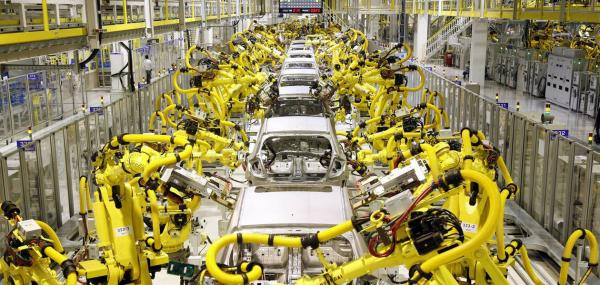

Хімічна промисловість
Хімічна промисло́вість — це галузь важкої промисловості, до якої належить продукція мінеральних добрив, пластмас і хім. композитів, штучного і синтетичного волокна й текстилю, органічних і неорганічних хімікатів, гербіцидів, хімікатів для презервування продуктів харчової промисловості, фото- і кіноплівки та реактивів для упакування, штучної гуми, засобів для миття та дезинфектантів, отрутохімікатів воєнного призначення, а також деяких експозитів.
Хімічна промисловість – галузь важкої індустрії, на підприємствах якої, застосовуючи хімічні методи переробки сировини і матеріалів, одержують різну хімічну продукцію (органічні і неорганічні хімікати, мінеральні добрива і сировину для них, содопродукти, хлор, бром, барвники, реактиви, хімічні волокна, товари побутової хімії тощо). У залежності від технології виробництва і призначення продукції хімічна індустрія підрозділяється на окремі підгалузі.
Машинобудування
Машинобудування або машинобудівна промисловість — найважливіша комплексна галузь обробної промисловості, яка включає проектування, виробництво й експлуатацію машин та інструментів.

Машинобудування (як наука та навчальна дисципліна) зародилося в 19 столітті в результаті впровадження у виробництво відкриттів у галузі фізики. Інженерні спеціальності вимагають розуміння та фундаментальних знань у таких галузях, як механіка, кінематика, термодинаміка, матеріалознавство, електротехніка, електроніка, структурний аналіз та ін.
Із розвитком та мініатюризацією об'єктів машинобудування значного розвитку набувають такі галузі, як композити, мехатроніка, нанотехнології, робототехніка. Інженери-механіки можуть також працювати в галузі біомедичної інженерії, зокрема, біомеханіки, транспортних явищ, біонанотехнології і моделювання біологічних систем, як, наприклад, механіки м'яких тканин.
Разом із цим, інженери-механіки можуть застосовувати такий інструментарій, як програмні продукти, що дозволяють моделювати будь-які технічні об'єкти і їх роботу, проводити віртуальні випробування цих моделей, застосовувати комп'ютеризовані системи автоматизованого проектування та системи неперервного управління життєвим циклом продукції для того, щоб проектувати заводи-виробники, промислове устаткування і верстати, системи опалення і охолодження, транспортні системи, авіаційні засоби, водні судна, робототехніку, медичні прилади, зброю тощо.